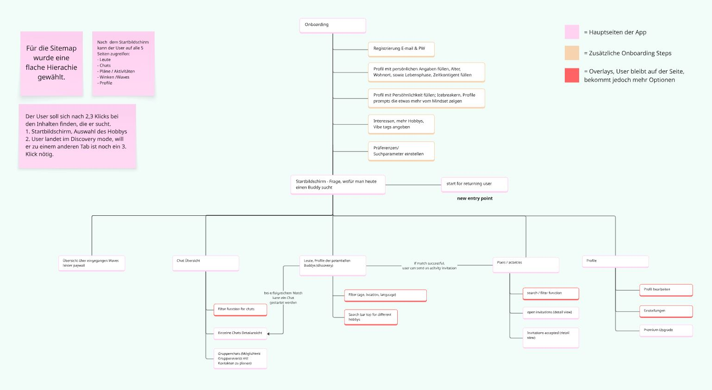

Context
People want connection. But often don't act on it.
In recent years, loneliness has increasingly been recognised as a societal issue, not because people are alone, but because meaningful, real-world connections are harder to build. More people actively look for connection through shared hobbies and activities. Especially after phases like university or school, social structures fade and meeting new people requires more effort. This creates a paradox: people want connection, but often don't act on it.
Research
3 interviews. 21 survey participants. One clear pattern.
To better understand this problem, I conducted qualitative interviews and a survey. The results showed that 61.9% feel uncertainty when trying to meet new people, many hesitate to join new groups or events, and shared activities are a key driver for connection. A recurring concern was consistent across participants.
"I am afraid everyone already knows each other and I will be the outsider."
This suggests that the barrier is not access. It is uncertainty.
Key Insights
A gap between intention and action.
From the research, a clear behavioural pattern emerged: people want connection, but avoid uncertain social situations, especially when they have to take the first step alone. The problem is not motivation. It is friction.
People don't avoid connection. They avoid the uncertainty of the first step.
Persona
Sarah: the user at the centre.
Based on these insights, I defined a core user. Sarah is 33, recently moved to a new city, and looks for activities and events. She wants to meet new people but feels unsure in unfamiliar group situations and prefers smaller, more predictable interactions. She is not isolated. She simply lacks shared experiences.
Sarah, 33
Data Science Consultant, recently moved to Hamburg
K-Pop, Escape Rooms, Hiking. Not shy. She just needs the situation to feel safe before she takes the first step.
The Critical Moment
She sees an event she would enjoy. But she doesn't go.
Sarah comes home after work. She sees an event she would enjoy. But she doesn't go. Not because she isn't interested, but because she doesn't want to go alone. This one moment captures the entire problem.

Problem Reframing
People don't struggle to find opportunities. They struggle to act on them.
Many interactions stay superficial because the transition to real-world action never happens. The problem shifted multiple times during research, from finding people, to building lasting connections, to the real pre-problem: taking the first step at all.

Core Insight
Connections don't fail at matching. They fail at the first step.
Users don't need more options. They need a simpler, safer way to act. The biggest barrier is not social interest. It is the perceived risk of initiating.
Insight
What it means
Decision
Users struggle to initiate, not to find people.
The barrier is not discovery, but the first step.
Match users before they attend an activity.
Shared hobbies alone don't create meaningful matches.
Context matters: time, motivation, life situation.
Profile elements that show intent and availability.
Users are not ready to meet immediately.
Trust needs to build before real-life interaction.
Allow lightweight signals before suggesting a meetup.
One-sided initiative leads to inactive groups.
Sustainable interaction requires mutual engagement.
Design for reciprocal interaction, not passive consumption.
Opportunity
What if we reduce the barrier of the first step?
Instead of asking users to join groups or approach strangers, we can create smaller, more manageable interactions. The goal is not to design a better event platform. It is to design a better first step.
The Solution
Buddy-first instead of event-first.
While researching other apps, I noticed that most non-dating platforms are event-first: sign up and hope someone will be there. Buddy First flips this. Meet one person first, then go together. A fundamental structural difference.

Design Principle
Break large social steps into smaller, manageable actions.
Smaller steps reduce uncertainty. Clarity increases action. Low pressure encourages participation. People are more likely to change their behaviour when the situation changes, not when they are encouraged to act differently.

Competitor Analysis
What existing apps get wrong.
The analysis of existing platforms surfaced a consistent problem: most apps are built around events, not people. They also rely on patterns that increase anxiety rather than reduce it.
✗
FOMO pressure via missed meetup notifications
✗
Excessive push notifications
✗
Key features behind paywall
Profile Design
Warmth before competence.
Research on instant likability (thin slicing) shows that warmth is assessed before competence. I structured the profile accordingly: icebreaker prompt first, then photo, then tags for life stage, commitment, and ambition. The goal is to communicate personality and intention before signalling skills or interests. A deliberate departure from dating apps like Bumble, where the photo always comes first.

User Flow
From discovery to real interaction.
The product guides users through a structured, low-pressure flow. Five navigation sections, each mapping to one concrete user need.


Wireframes
From idea to first prototype.
MVP flow: find a person, make contact, go together. No features added for feature's sake.

Key Interaction Moments
The product in action.
Four screens show the core flow: browse and scroll, filter by context, match, and send an activity invitation.


The waiting state as an anxiety problem
After Sarah sends a Wave, uncertainty kicks in. I designed this moment explicitly: Sarah can keep browsing while waiting. The state is productive, not empty.
Visual Direction
Warm, approachable, low-pressure.
The visual direction reflects a safe and comfortable social experience. The tone avoids dating-app aesthetics and corporate minimalism. It should feel like something you would actually want to use on a quiet evening.

Usability Testing
Testing assumptions with real users.
I ran usability tests using a structured test script. Scenario: "You just moved to Munich and want to find someone who also knits." Tests run without guiding participants. Two central questions guided the sessions: does the profile create a genuine desire to reach out, and is the transition from match to meetup clear?
Key finding
Users do not want to be pushed into meeting immediately. They want to build familiarity first. A gradual transition increases willingness to meet.
Design Ethics
Design with a stance.
Every design decision has an ethical dimension. I made four commitments from the start.
No FOMO pressure
No notifications about missed events or social pressure tactics
Core features for everyone
No key functionality hidden behind a paywall
Cognitive accessibility
Few decisions at once, clear language, minimal cognitive load
Considered invitations
Matching based on intent, not mass outreach or spam
Success Metrics
How is success measured?
Engagement
Does a match lead to a real meetup?
Match and chat tracking + in-app survey "Did you meet up?"
Retention
Does a first meetup lead to another?
In-app survey "Did you go together?" + tracking repeat matches.
What I learned
UX Research: conducting and synthesising qualitative interviews, surveys and affinity mapping
Problem Reframing: having the courage to let go of the original question when research points elsewhere
Psychology in Design: applying behavioural psychology to profile design and friction reduction
Usability Testing: running structured tests and validating assumptions with real users
Design Ethics: making explicit decisions against dark patterns